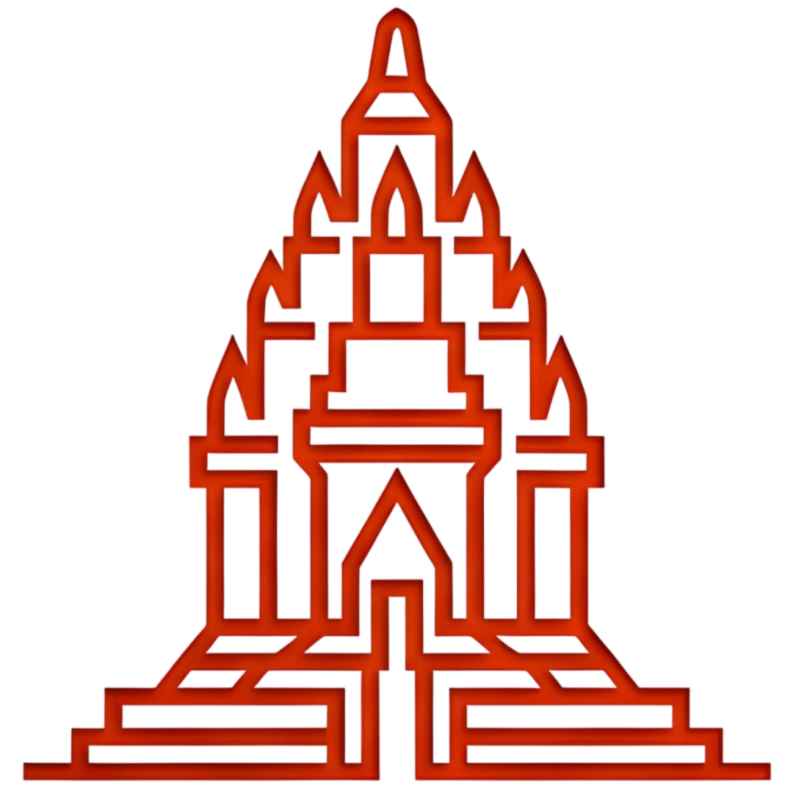

CANDI SIWA
Virtual Heritage · Prambanan
Menginisialisasi...
—
Bahasa Indonesia
English
CANDI SIWA
PRAMBANAN · ABAD IX MASEHI
Klik canvas untuk mengunci mouse · ESC untuk keluar
MASUK VIRTUAL TOUR
Candi Siwa Prambanan
Kompleks Prambanan, Jawa Tengah
Abad IX M
ID
EN
Street View
Orbit
FPS: --
—
Klik canvas untuk mengunci mouse
CANDI SIWA
Kompleks Prambanan, DIY
Tinggi Asli
47 m
Dibangun
~850 M
Gaya
Jawa Tengah
Material
Andesit
Agama
Hindu Śiwa
—
W A S D
Berjalan
Mouse
Melihat
Shift
Berlari
Space
Lompat
E
Info titik terdekat
ESC
Keluar mode
E
Lihat informasi
▲
▼
✕
—
—
—
▶
Dengarkan